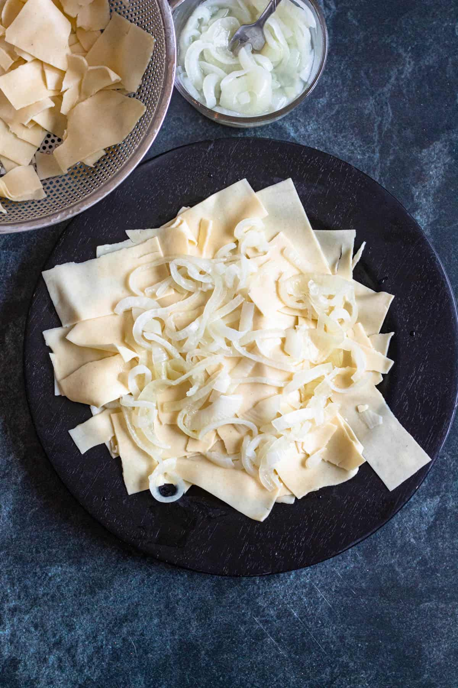
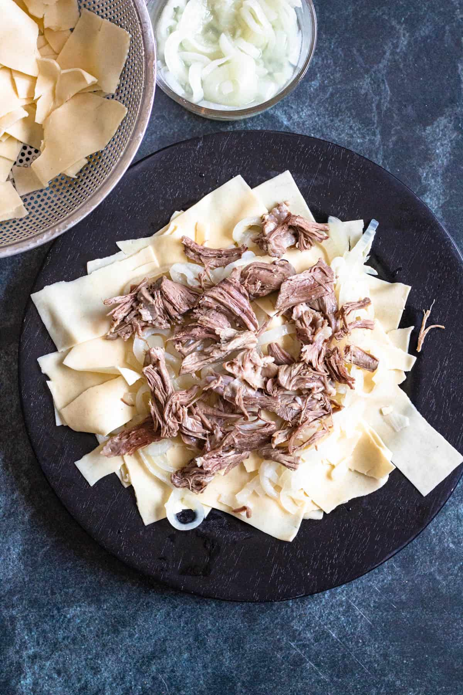
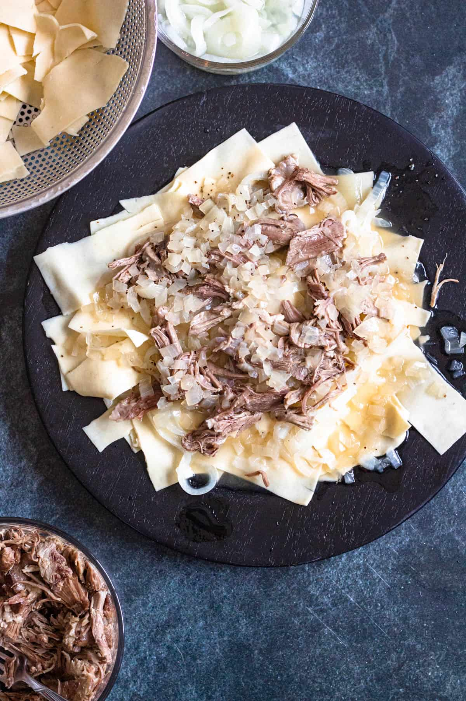

Beshbarmak recipe is a traditional Kazakhstan meal of meat and noodles. A layer of cooked
noodles is topped with perfectly tender meat and a flavorful onion broth. Traditionally this meal was made
with
horse meat and eaten with your hands but today’s more modern version of Beshbarmak recipe is much easier to
make and enjoy.
My recipe calls for lamb, made tender in an instant pot or on the stove-top, and uses
oven-ready lasagna noodles
to cut down on prep time. These simple shortcuts make this meal perfect for a unique and exciting dinner.
The name Beshbarmak (and other similar names like Besbarmak) translates to mean “five
fingers”,
which is how this dish was originally eaten. Nomadic tribes would use their bare hands to enjoy
the traditional Kazakh dish, along with a soup or broth called chyk, shurpo or shorpa on the side.
These nomadic lifestyles relied heavily on animals, their milk products, and meat for nourishment.
They would make Beshbarmak dish out of horse meat, camel, or mutton or even a mixture of all three.
Occasionally beef could be used.
Because the dish was enjoyed by nomadic peoples, variations can be found all over Central Asian cuisine.
It is considered the national dish of Kazakhstan and a big part of Kazakh hospitality. The serving
of Beshbarmak was very ritualistic. It was often prepared for special occasions when the guest of honor
would be allowed to choose an animal from the herd for the meal. The entire sheep was cooked, including
the head, which was slowly boiled until tender and became the focal point of the traditional dish.
Beshbarmak recipe was served in large communal serving dishes that everyone would sit around on the
floor or low table. Pieces of the head would be cut by the most respected member of the table.
Different meats were served to different guests and family members, depending on their age, gender, and
social rank. The best pieces of meat went to the oldest adult men, then the men, then women, younger
adults, and finally the children, meant to encourage them to work hard to earn their status.
Today the meal is served in a more modern way, letting go of traditions. It is still served at special
occasions but is also enjoyed in homes of Kazakh people on an average weeknight as well.
Horse meat is rarely used outside of Kazakhstan as it is illegal in many countries. Lamb is a perfectly
authentic replacement.
Classic Beshbarmak is also rarely eaten with your hands or served dependent on social structure–but you
could always give it a try!
|  |  |  |